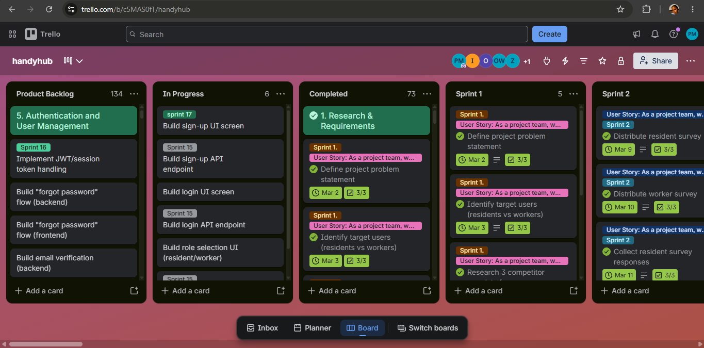
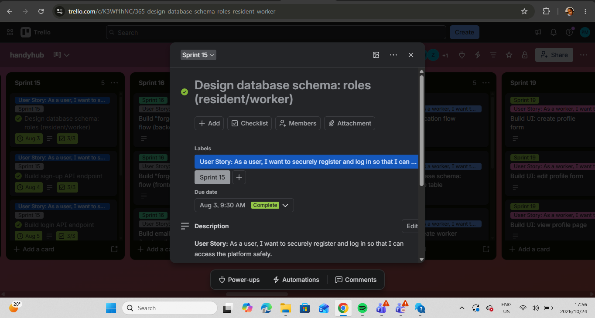
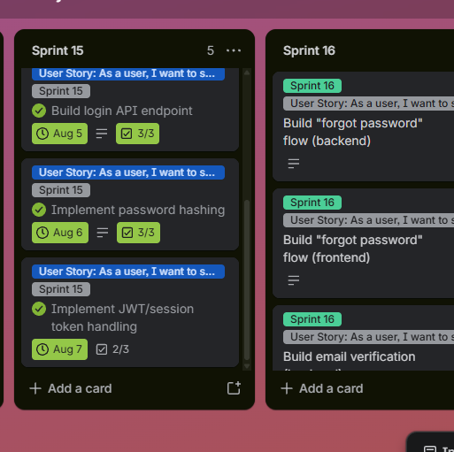

WIL Part 1: HandyHub (School WIL Project, July to August 2026)
HandyHub is a community app that connects residents of Belhar with trusted local service providers such as plumbers, electricians, painters and carpenters. The project began in Term 1, in my Professional Communication subject, where we had to find a gap in our community and help to close it. From March to June we planned the solution using the brief from that subject. In July, my Project Presentation lecturer asked us to develop the app as our WIL school project, so I continued the project from July to August 2026, starting from the planning and business case we had already done. A survey of 27 Belhar residents showed that 96.3% had struggled to find a reliable service provider, and 100% said they would use an app to find verified ones.
My role: Product Owner and Agile Lead. I also led the development of the application and coded the landing page, sign up, login, client dashboard, service provider dashboard and profiles.
Links: HandyHub app | Trello board
Back to top
HandyHub Artefact 1: Agile Team Charter
Evidence: Agile Team Charter (PDF)
| Mission |
Solve the difficulty of finding trustworthy skilled workers in Belhar by connecting residents with verified service providers |
| Success |
A working app where users can register, search and connect with workers, positive feedback in testing, and a completed presentation |
| Framework |
Kanban on Trello, with daily stand-ups, weekly planning, a demo at the end of each sprint and weekly retrospectives |
| Communication |
WhatsApp for quick messages, Microsoft Teams for meetings, email for formal matters |
| Decisions |
Consensus or a team vote, escalating to the Product Owner if stuck |
| Team |
Andile Pamela Masina (Product Owner and Agile Lead), Zahrah Vermaak (Developer, Analyst and Tester), Olona Williams (Developer and Designer) |
Reflection (STAR)
Situation: Our charter, written in April 2026, set out three roles: me as Product Owner and Agile Lead, Zahrah as Developer, Analyst and Tester, and Olona as Developer and Designer. At the end of July, Olona left the project because she got an industry placement. From then on, the two of us had to deliver work that had been planned for three people.
Task: I had to keep the project moving and make sure that the app was built and the documentation and presentation were completed, even though the plan assumed a larger team.
Action: We shared the work by what each of us could do. I asked Zahrah to focus on the documentation and the presentations, and I led the development of the application. The workload was too much for two people, so we could not follow the sprint plan we had written on Trello. Dividing the work this way was how we made it manageable.
Result: The app was built and the project was presented. I learned that a charter is only a starting point, and that it must be updated when the team or the workload changes. Having to be both Product Owner and Agile Lead while also leading the development of the app showed me how much a small team depends on clear roles. Next time I would revise the charter and the sprint plan as soon as the team became smaller, instead of working around them.
Back to top
HandyHub Artefact 2: User Stories and Tasks
Evidence: Trello board | Taskboard and logbook, 14 to 17 July
We wrote eight user stories, each broken into tasks and planned across sprints on Trello. This table shows the stories and what happened to each one in the finished app.
| 1 |
Conduct research and define the project requirements |
Identify the problem, run the resident survey, analyse the results, complete the business case, gather requirements, create the product backlog |
Done. The survey of 27 residents and the business case were completed |
| 2 |
Plan and design the application |
Present the business idea, create UI wireframes, design the navigation flow and database, allocate development tasks |
Done. Wireframes were designed in Figma and the app followed them |
| 3 |
Allow users to register and log in |
Design the registration and login pages, implement authentication, test registration, fix bugs |
Working. Sign up, log in, role selection, password reset |
| 4 |
Allow workers to advertise their services |
Create a worker profile, add skills and qualifications, upload previous work |
Working. Worker profiles can be viewed and edited. Photo upload of previous work is not implemented |
| 5 |
Allow residents to find service providers |
Search by service category and location, view worker profiles |
Working. Residents browse categories and open worker profiles. The workers shown on the Home tab are demo data |
| 6 |
Allow residents to request services |
Create the request feature, accept or decline requests, notifications, test the booking workflow |
Working. Residents send requests, workers accept them, with live chat and notifications |
| 7 |
Build trust between users |
Ratings, reviews, worker verification |
Not developed. Ratings shown in the app are demo data |
| 8 |
Test and deploy the application |
System testing, bug fixing, final testing, deployment |
Done. The app was tested and deployed on Vercel at handyhub-mobile.vercel.app |
Screens in the finished app: onboarding, role selection, sign up, confirm code, log in, forgot and reset password, Home, Categories, service list, worker profile, request a job, Jobs, Messages, new chat, chat, notifications, Profile, personal information, privacy and security, settings, payment methods and saved addresses (the last two are placeholders).
Reflection (STAR)
Situation: Our user stories gave us a clear plan for the app, from registration through to deployment. The first big decision I had to make was which technology to build it with.
Task: I had to choose a tech stack that I could work with in the time available, while also doing the Product Owner and Agile Lead work. I was at home and had time to work, but I also had a lot of other work and could not afford to learn a completely new language or framework.
Action: I chose the technologies I was already comfortable with. The only new thing I learned was Supabase. I researched options and found a cloud service that provides a database, SQL, authentication and security in one place, which suited a small team. I then coded the landing page, sign up, login, client dashboard, service provider dashboard and profiles. For a while I worked at a steady pace, but my lecturer then said that the app had to be complete and deployed. I did not have enough time left to finish the chat system myself, so I got help to complete it.
Result: Stories 1 to 6 were working in the finished app, and the app was tested and deployed (story 8). Story 7, building trust through ratings and reviews, was not developed, because there was not enough time for a team of two. I learned that choosing tools is a project decision, not only a technical one, and that the right choice balances what you already know with what you can learn in time. I also learned to decide early which parts to do myself and which to get help with when a deadline moves. Next time I would estimate the size of each story at the start and begin the largest ones, like the chat, earlier.
Back to top
HandyHub Artefact 3: Product Backlog
Evidence: Trello board, Product Backlog list



Our product backlog lives in the Product Backlog list on Trello. It holds all the work for the project, grouped into epics such as "1. Research and Requirements" and "5. Authentication and User Management". Each card carries a sprint label, and finished cards move to the Completed list. The requirements in the Term 1 brief were the starting point for the backlog. At the time of my screenshot on 24 October 2026, the board showed 134 cards in the Product Backlog list, 6 in In Progress and 73 in Completed. One of our Sprint 4 tasks was to prioritise the user stories using the MoSCoW method.
Reflection (STAR)
Situation: The requirements for HandyHub came from the Term 1 brief in Professional Communication, from March to June. When my Project Presentation lecturer asked us in July to develop the app, we had to start from that planning and turn it into a backlog we could build from.
Task: I had to turn all the requirements into a prioritised, organised backlog that a team of two could deliver, as the Product Owner.
Action: I treated everything in the brief as a requirement and organised it into epics, cards and sprints on Trello, with a checklist on each card. When Olona left at the end of July and the team became two, we did not remove anything from the backlog. Instead we divided the work, with Zahrah doing the documentation and me working on the app.
Result: The backlog gave us a clear picture of the whole project, and 73 cards were completed. A large part of it, 134 cards, was still open at the end, which showed me that we kept more in the backlog than a team of two could finish. I learned that a backlog is a living list, and that when the team's capacity changes, the Product Owner should re-prioritise and move lower-priority items out, instead of leaving them all in. Next time I would do that as soon as the team changed.
Back to top
HandyHub Artefact 4: Sprint Backlog
Evidence: Trello board, Sprint 15 list

Sprint 15, 3 to 7 August 2026. This was our first sprint of real development work, and the last full sprint before my 4 to 7 August logbook. The sprint backlog is the Sprint 15 list on Trello.
Sprint goal: Build the foundation for registration and login (database design, sign-up, login, password hashing and session handling), so that users can securely register and log in and access the platform safely. This sprint belongs to the Authentication and User Management epic.
| Design database schema: roles (resident/worker) |
3 August |
List the fields needed, draft the table structure, test the schema with sample data |
Complete (3 of 3) |
| Build sign-up API endpoint |
4 August |
3 subtasks |
Complete (3 of 3) |
| Build login API endpoint |
5 August |
3 subtasks |
Complete (3 of 3) |
| Implement password hashing |
6 August |
3 subtasks |
Complete (3 of 3) |
| Implement JWT/session token handling |
7 August |
3 subtasks |
Marked complete, 2 of 3 subtasks ticked |
Each card carries the user story "As a user, I want to securely register and log in so that I can access the platform safely" and a checklist of three subtasks. The subtasks on the cards still carry the names from our original plan (Andile, Olona and Zahrah). After Olona left, the development work in this sprint was done by me.
Reflection (STAR)
Situation: In the week of 3 August we started the first real development sprint. The team was now two people, and the sprint plan had been written when we were three.
Task: As Product Owner and development lead, I had to choose work for the sprint that one developer could finish in a few days, and that the rest of the app depended on.
Action: I kept the sprint small and focused on one user story: registering and logging in. I picked the database design for roles, the sign-up and login endpoints, password hashing and session token handling, with one card due each day from 3 to 7 August, and a checklist of three subtasks on each card. I did the development work myself, while Zahrah continued with the documentation and presentations.
Result: Four of the five cards were completed with every subtask ticked, and the fifth, JWT and session token handling, had two of its three subtasks done by the end of the sprint. A small sprint with a single clear goal was much easier to finish than the long sprint plan we had written earlier. I also learned that the names on the card subtasks should have been updated when Olona left, because the board no longer showed who really did the work. Next time I would update owners and subtasks as soon as the team changes, so that the Sprint Backlog reflects reality.
Back to top
HandyHub Artefact 5: Agile Logbook
Evidence (my weekly logbooks, as I submitted them): 14 to 17 July | 21 to 24 July | 28 to 31 July | 4 to 7 August
I kept a weekly logbook for the WIL project, using the template with three parts: a Taskboard, a Walkthrough with four team questions, and a daily stand-up log that answers three questions each day (what I completed, what I plan next, and what is blocking me). Each logbook was submitted every week.
| 14 to 17 July |
First online entrepreneurship meeting. Prepared our business case and presented it to the class on 16 July. On 17 July the group planned the next steps and how to divide tasks |
| 21 to 24 July |
Prepared and presented our product backlog, user stories and sprints to the class on 23 July. Planned the UI and UX design |
| 28 to 31 July |
Presented our wireframes, designed in Figma, on 28 July and attended other group presentations. There are no entries for 30 and 31 July because of a strike on campus, so we did not work on those days |
| 4 to 7 August |
Presented our frontend app on 4 August. Reviewed the sprints and brand guide, then fixed the frontend app and reviewed the product backlog on 7 August |
The blockers that appear most often were coordinating meeting times for the group, making sure everyone contributed equally, limited time before presentations, and, later, limited time to code the whole app.
Reflection (STAR)
Situation: Each week I had to record my daily stand-ups in the logbook, while attending the entrepreneurship meetings, presenting with my group, and starting to develop the app.
Task: I had to keep an honest daily record of what I completed, what I planned and what was blocking me, for four weeks from 14 July to 7 August.
Action: I filled in the logbook each week using the three stand-up questions. The entries follow the work from the business case, to the product backlog and user stories, to the wireframes, and then to the frontend app. On 30 and 31 July I did not write entries, because a strike on campus meant that we did not work on those days.
Result: The logbook gave me a clear record of how the project moved from planning to a working frontend. Writing down my blockers each day made problems such as meeting times and limited coding time visible, and that helped me plan the next step. I found it hard to keep up with it on busy days, because I also had other school subjects to attend to. I learned that a logbook only works if it is updated every day, and that short honest entries are more useful than long ones written later. Next time I would set a fixed time each day to fill it in.